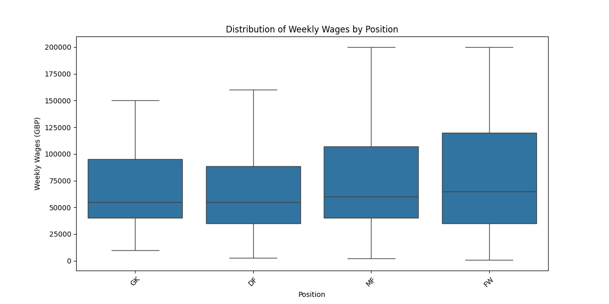
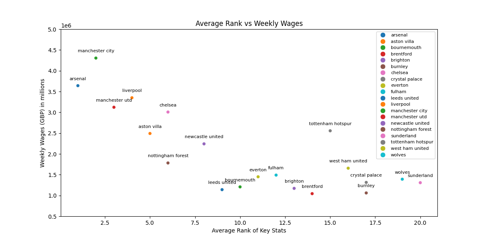
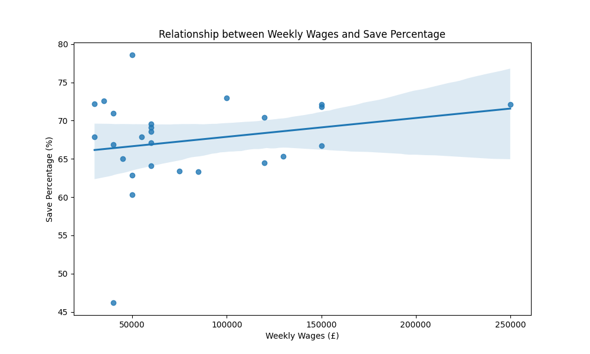
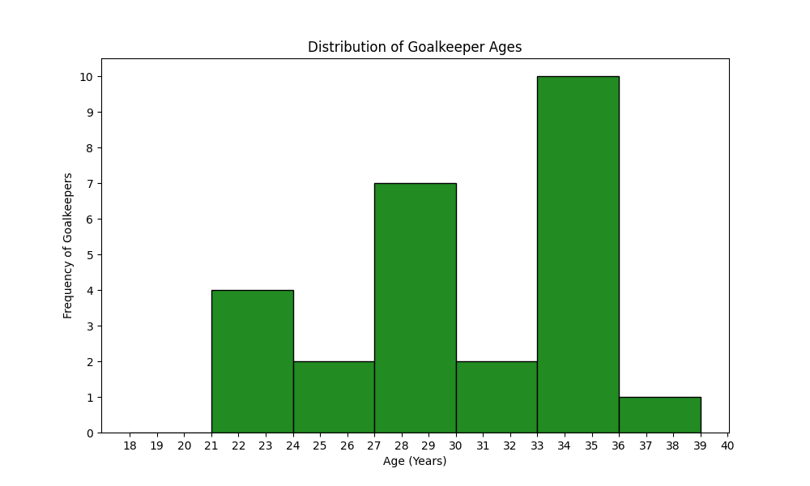

Welcome to the Premier League analysis blog for Ben Harris.
For this empirical project I decided to complete an analysis of what are the main contributors to a PL footballers wage as this partly ties in economics, with my passion for football. This report has 5 main parts including:
Firstly, I thought I’d start with seeing how many players we have in our cleaned dataset. After finding the length of the dataset we can see we have access to 501 footballers all with various levels of performance and wages. A good place to start with our analysis is to look at some common summary statistics of the player's weekly wage.
| Statistic | Weekly Wage Value |
|---|---|
| Mean | £77,749.04 |
| Median | £60,000.00 |
| Mode | £50,000.00 |
| Variance | £4,041,176,647.80 |
| Standard Deviation | £63,570.25 |
| Maximum | Erling Haaland with £525,000.00 per week |
| Minimum | Lyle Foster with £769.00 per week |
From this output we can see that the mean of £77,749.04 is higher than the median of £60,000, which shows our data is skewed towards the right and therefore shows a small number of highly paid players are pulling the mean up, for example Erling Haaland who is the highest paid player taking home £525,000 per week. The mode or most common weekly wage is at £50,000, which suggests a high concentration of players around this wage in the Premier League as this is often seen as a typical contract value. Now moving onto the spread of PL footballer's weekly wages, as with a variance of about £4,000,000,000, which when square rooted translates to a standard deviation of £63,570 further suggests the inequality in the league as players like Lyle Foster earn less than 0.15% of Erling Haaland’s wage, but could there be reasons for this?
For this section of my empirical project, I wanted to see the impact, that being in a certain position had on a player's wages as others like O’Hanlon think ‘that forwards and midfielders are the premium positions in the Premier League’ (2025). I thought the best way to show this visually would be to group players into their dominant position and then create an individual box plot for each one.

| Position | Average Weekly Wage (GBP) |
|---|---|
| Forward | £87,916.90 |
| Midfielder | £79,837.16 |
| Goalkeeper | £71,428.57 |
| Defender | £71,416.17 |
In this box plot you can see I have removed the outliers so that we can see a more reliable dataset as forwards like Erling Haaland can distort the averages.
From this box plot we can see that on average midfielders (MF) and forwards (FW) are seen as more premium positions, due to the fact their medians and upper quartiles are greater than the goalkeepers (GK) and defenders (DF). For example, using the table below the box plot we can see more accurately the means of each position and that goalkeepers and defenders both earn £71,400 to 3 significant figures, but we see an almost 12% increase in wages of the average midfielder and then a 10% increase as we compare the average forwards wage with the midfielders.
The main reason for this is forwards are directly responsible for scoring goals, which is how you win games, as for example if a defender defends very well each game and never concedes a goal there is a chance they could still draw many games if they do not have effective forwards. As a result of this the team will gain less points than another team who has more attacking threat, which will result in a lower league position. This is especially important in the Premier League, as it gives out the most prize money due to its global recognition. Using data from Chowdhury (2025) we can see that Liverpool, who finished first, earned £65,700,000 more than Southampton who finished last, with each position earning you about £3,115,000 extra. Therefore, showing perhaps paying effective forwards the ‘big bucks’ is important for clubs' business wise.
Furthermore, the higher you finish in the Premier League allows for further revenue generating opportunities, which include qualification for other competitions (e.g UEFA Champions League and more lucrative sponsorship deals from global brands like Adidas, who have just agreed to pay Liverpool FC £60,000,000 per season for a partnership.
Secondly, I wanted to complete an analysis on clubs as a whole as football is a team sport and ‘it’s better to have a great team than a team of greats’ (Sinek), meaning that a group of players who are willing to work hard for each other will go further than a team of selfish individuals. I wanted to see if there was a significant correlation between the cumulative amount teams pay their players and the overall teams performance levels.
To analyse this, I ranked clubs based on ten statistics including goals, assists, average possession, yellow cards, red cards, fouls committed, fouls drawn, crosses, interceptions, and tackles. After this I combined them to give each club an average ranking and plotted the scatter graph below to compare with their total weekly wage bill.

As you can see from the graph there is a clear negative correlation between weekly wages and a team's average rank, which is what we would’ve expected, as often the best teams have the best players and the best players demand higher wages. Furthermore, the best teams have higher revenues, which means they can pay higher wages than the lower performing teams. For example, teams like Arsenal FC, who were top of the premier league at the time I collected this data, are 1st in average rank and 2nd in their total weekly wage. Furthermore, worse teams like Wolves, who have been in last place in the premier league all season, are 19th place in average rank and also have a below average weekly wage bill.
However, it is interesting we see some outliers. One being Tottenham Hotspur who finished 9th in the Deloitte Football Money League 2026, generating €672.2 million in revenue (Deloitte, 2026), which allows them to have a high weekly wage bill of £2,556,000. Unfortunately for them this has not translated to on-field performance as their average rank was 15th, and they find themselves in the relegation battle at the time of writing this.
Another key outlier in the data is Nottingham Forest, who although not having the spending power of other big-name teams, they make do and still manage to be joint with Chelsea in average rank despite Chelsea spending about £1,200,000 more per week. This is perhaps because of the Nottingham Forest owner, Evangelos Marinakis, who is rumoured to have a dodgy past. According to the BBC this includes fraud, blackmail, and even bombing a referee's bakery (2025). Therefore, some people may think he does not disclose everything that he pays his players or he has ways to bargain his players weekly wage downwards.
For another piece on analysis I wanted to dive deeper into what actually causes player to be paid more than other players specifically outfield players, which meant using a regression software like random forest regressor’s and average treatment effects (ATE). Firstly, I used the Random Forest Regressor extension from scikit-learn, which builds decision trees on random subsets of my data and then averages their predictions. Then I used Average Treatment Effects (ATE) to measure the casual impact of being above average for certain statistics.
| Random Forest Regressor Performance | |
|---|---|
| Mean Squared Error | 3,169,190,594.55 |
| Root Mean Squared Error | 56,295.56 |
| R Squared Score | 0.0893 |
In this weekly wage is the dependant variable (Y) and thirteen other statistics are the independent variables (X). At first, we see an extremely high mean squared error, which is because we are dealing with very large numbers already. Then the root mean squared error, shows that the model is off by about £56,296 on average, for example a player could be predicted to be paid £100,000 a week but actually only get £43,764 or even get £156,296. Lastly, we can see that the R squared is equal to 0.0893, which means that only 8.93% of the variation in weekly wages is explained by this model. Therefore, leaving about 91% unexplained, which could be because football wages are determined by much more than just performance statistics for example team and position, which we talked about previously and in today’s world reputation and brand value. Therefore, to get a more exact model it may be better to use Average Treatment Effects (ATE), which I will go over now.
To do this I made the treatment effect binary for if the statistics included are above the average for the Premier League or not, 1 if above average and 0 if below average. I then used these new binary statistics as independent variables (X) and kept weekly wage as the dependant variable (Y). Then I used the python extension stats model to run this OLS regression, and it gave me the output below.
From this regression we can see straight away that using the average treatment effect leads to a model with a more accurate fit as the R squared increases to 0.162, which shows that the variation in the independent variables account for 16.2% of the variation in weekly wages. Furthermore, the p-value, Prob (F-statistic), is extremely low, therefore showing that significance of this regression.
By looking at individual coefficients, we can see that a player with above average goals scored, will see a higher wage by on average £28,117 than a player with below average goals. This statistic is also significant as the p-value is 0.0000 showing compelling evidence this variable matters. Secondly, we can also see that a player with above average assists is paid £29,995 more on average than someone with low assists, showing that assists may have more of an impact on wage than goals do.
Lastly, we can see that the skew is positive at 1.946 backing up our point earlier that few players like Erling Haaland are pulling the average weekly wage upwards and the kurtosis of 9.505 shows we have fat tails for this data, which again indicated extreme outliers.
In this section of the project, I wanted to try to use Linux/WSL and SQL to some complete data cleaning and analysis and then combine this with python for more visual data analysis.

Firstly, I wanted to use a key measurement of a goalkeeper's performance, which is save percentage as Rose says, ‘for many years the role of a goalkeeper was to keep the ball out of their net’ (2025). Therefore, it is likely we would see a strong correlation between weekly wage and save percentage. However, we see that the correlation is 0.2158 (4 s.f), which is lower than expected, perhaps because in the modern game goalkeepers are not just expected to save shots, ‘they are now heavily involved in a team’s tactical play’ (2025, Rose), which means other attributes, like technical ability on the ball, can help a goalkeeper become more price inelastic.
Secondly, I was interested in the supposed I wanted to see the difference between what a goalkeeper in the ‘big 6’ gets paid compared to what one outside of the ‘big 6’ gets paid. By using SQL to group together ‘big 6’ goalkeepers we can see they get paid on average 44.3% more than non big 6 club goalkeepers, which further shows the inequality in the league, as often there is not much difference between the goalkeepers skill level at such a high standard.
Lastly, King says ‘goalkeepers have long been feted for playing into their 40s’ (2022), however more recently this has started to change as we see younger goalkeepers get a chance in between the sticks. I wanted to test this theory by using a histogram to see the age distribution of goalkeepers in the Premier League.

However, from this we can still see that PL goalkeepers are often older instead of younger, which is mainly because although being a goalkeeper requires lots of athleticism it is not as much as outfield players require. Therefore, they have less stress on their bodies so are able to spread their careers further than positions that require more athleticism, for example forwards and midfielders who run up to 13km a game (Power, 2025). Leading on from this we also see that the youngest goalkeeper in the league is Melker Ellborg at almost 23 years old, which is almost 7 years older than young outfield prodigies like Max Dowman, who has not even completed his GCSEs yet.
O’Hanlon. R (2025, December 26) How much is each position really worth in the Premier League?
Available at: https://www.espn.co.uk/football/story/_/id/47409498/how-much-position-really-worth-premier-league
Chowdhury. T (2025, July 14) How much did Premier League clubs earn in prize money?
Available at: https://www.bbc.co.uk/sport/football/articles/c24qmlm88d7o
Sinek. S (n.a) Top 10 Teamwork Quotes That Inspire Collaboration and Results
Available at: https://www.klipfolio.com/blog/top-10-awesome-teamwork-quotes
Deloitte (2026, January 22) Deloitte Football Money League 2026
Available at: https://www.deloitte.com/uk/en/services/consulting-financial/analysis/deloitte-football-money-league.html
BBC (2025, August 22) Who is Marinakis and is he still in control of Nottingham Forest?
Available at: https://www.bbc.co.uk/sport/articles/c7vl9dgvj82o
Rose. G (2025, January 8) How the role of a goalkeeper changed
Available at: https://www.bbc.co.uk/sport/football/articles/cp3z0wx3x54o
King. I (2022, July 10) Is it just me or are Premier League goalkeepers getting younger these days?
Available at: https://www.football365.com/news/opinion-premier-league-goalkeepers-getting-younger-henderson-bazanu
Power. L (2025, October 16) How Much Does a Premier League Footballer Run Per Game?
Available at: https://premierleaguenow.co.uk/2025/10/16/how-much-does-a-premier-league-footballer-run-per-game/